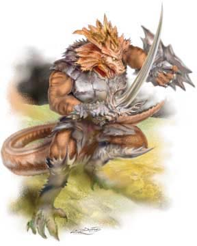

中型异界生物 (跨位面，爬虫)

| 生命骰： | 3d8+6 (19 hp) |
| 先攻： | +1 |
| 速度： | 30 英尺 |
| 防御等级： | 23 (+1 敏捷，+5 胸甲，+1 小型钢盾，+6 天生)，接触 11，措手不及 22 |
| 基本攻击／擒抱： | +3/+7 |
| 攻击： | 啮咬 +7 近战，或戟 +7 近战，或弯刀 +7 近战，或复合长弓 +4 远程 |
| 全力攻击： | 啮咬 +7 近战，或戟 +7 近战和啮咬 +2 近战，或弯刀 +7 近战和啮咬 +2 近战，或复合长弓 +4 远程 |
| 伤害： | 啮咬 1d4+4 (1d4+2 持戟或弯刀时)，戟 1d10+6，弯刀 1d6+6，复合长弓 1d8 |
| 面宽／触及： | 5 英尺/5 英尺 |
| 特殊攻击： | ― |
| 特殊能力： | 黑暗视觉 60 英尺 |
| 豁免： | 强韧 +3，反射 +4，意志 +3 |
| 属性： | 力量 18，敏捷 13，体质 14，智力 13，感知 10，魅力 11 |
| 技能： | 攀爬 +7，驯养动物 +3，威吓 +3，知识（位面） +4，骑术 +3，侦察 +3，生存 +3 |
| 专长： | 精准射击，猛力攻击 |
| 地域： | 任意陆地和地下 (外域) |
| 组织： | 单独，小队（2�C3），匪帮（6�C11 外加 50% 非战斗人员，1 名 4�C7 级首领，和 1�C6 巨蜥），或部落（30�C60 外加 1 名 4�C7 级副官，1 名 5�C10 级首领，和 11�C20 巨蜥） |
| 挑战等级： | 3 |
| 宝物： | 标准 |
| 阵营： | 通常混乱邪恶 |
| 进化： | 按职业等级 |
| 等级调整： | +3 |
卡斯塔是危险的有鳞类人生物，在外域的荒原和混乱位面游荡。它们因作为劫掠者、掠夺者、奴隶贩子以及雇佣兵而臭名昭著。
卡斯塔表面上类似蜥蜴人，可能很久以前就是它们的后裔。然而，卡斯塔比普通蜥蜴人要大得多，更坚韧，更具侵略性。卡斯塔有坚韧的小型鳞片和鲜明张扬的头冠，头冠上的复杂狂野图案对每个个体而言都是独特的。它们有用于平衡而非战斗的粗壮长尾。
大多数卡斯塔在外层位面以游牧匪帮形式旅行，寻找战利品、奴隶和战斗。它们会受雇于任何看起来足够强大（并且在它们眼中，足够有资格）指挥它们的人，但一旦发现雇主显出软弱迹象就会立刻背叛。
卡斯塔说龙语和通用语。
卡斯塔寻找冲入战斗的方法。一些卡斯塔先用箭雨打击对手，而另一些则挥舞长戟冲入近战。卡斯塔在使用武器时仍可进行啮咬攻击，它喜欢在战斗中品尝鲜血。这些生物利用巨蜥作为坐骑。
卡斯塔策划并执行伏击，重点在于牵制危险的敌人直到能在近战中将其击倒。然而，卡斯塔有强烈的怯懦倾向，一旦战况对己不利就会逃跑。
在游荡的卡斯塔匪帮中，强权即公理。任何匪帮中的等级秩序都处于不断变化中，挑战十分常见。卡斯塔曾经通过决斗至死来决定地位，直到它们几乎因此灭绝。自那时起，争端和挑战便通过一种非致命形式的仪式性战斗来解决。卡斯塔有一种外人难以理解的扭曲荣誉观。背叛、失信、盗窃和谋杀在卡斯塔社会中都是可接受的晋升手段。女性和男性一样强壮坚韧，同样可能在劫掠匪帮中发现她们。一些敌人曾目睹雌性卡斯塔背着幼崽厮杀。尽管看似不在意幼崽的安全，卡斯塔却会以惊人的凶猛保护它们的后代。
卡斯塔的偏好职业是战士；大多数卡斯塔首领是战士或牧师。卡斯塔牧师可以选择以下任意两个领域：混乱、力量、诡术或战争。一个卡斯塔玩家角色（PC）的有效角色等级（ECL）为其职业等级 + 3。例如，一个 1 级卡斯塔战士的 ECL 为 4，相当于一个 4 级角色。